품질경영기사 (2014-05-25 기출문제)
1과목: 실험계획법
1. 수준수 4, 반복수 5인 1원 배치 실험에서 분산분석 결과 A인자가 1%로 유의적이었다. ST = 2.478, SA = 1.690 이었고,
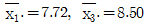
이었다. μ(A3)와 μ(A1)의 평균치 차를 α = 0.01로 구간추정한다면 약 얼마인가? (단, t0.99(16) = 2.583, t0.995(16) = 2.921이다.)- 0.321 ≤ μ(A3) - μ(A1) ≤ 1.239
- 0.370 ≤ μ(A3) - μ(A1) ≤ 1.190
- 0.374 ≤ μ(A3) - μ(A1) ≤ 1.186
- 0.471 ≤ μ(A3) - μ(A1) ≤ 1.143
(정답률: 63%)

2. 아래의 표는 기계와 열처리 온도의 조합에서 나타나는 부적합품 수를 가지고 계수치 2원 배치 분산분석을 한 자료이다. 설명이 옳지 않은 것은?
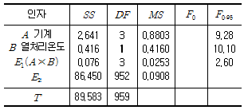
- 교호작용이 나타나지 않는 이유는 계수치 2원 배치는 실험이 사실상 분할법과 같기 때문이다.
- 기계의 수준 수 4, 열처리 온도의 수준 수 2 그리고 수준조합당 검사 수는 각 120회이다.
- 유의수준 5%로 열처리 온도 인자 B의 분산비는 4.581로 유의하다고 할 수 없다.
- 1차 단위 오차 E1은 분산비가 1보다 작으므로 2차 단위오차에 풀링시켜 다시 분산분석하는 것이 좋다.
(정답률: 48%)
3. 반복이 없는 2원 배치 실험에서 A는 모수, B는 변량이다. A는 5수준, B는 4수준인 경우 σB2의 추정값을 구하는 식은?
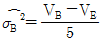
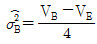
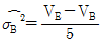
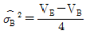
(정답률: 79%)
4. 두 수준의 인자 A, B, C, D를 LS(27)형 직교표의 1, 2, 4, 7열을 택하여 배치하고 실험한 결과 다음 표를 얻었다. 인자 A의 주 효과는?
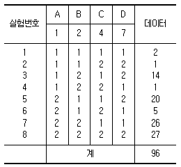
- 10
- 15
- 24
- 48
(정답률: 69%)
5. 두 변수의 데이터가 다음과 같을 경우 직선회귀 yi = β0 + β1xi + ei 의 회귀계수
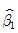
은?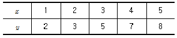
- 2.0
- 1.8
- 1.6
- 1.5
(정답률: 74%)
6. 반복이 없는 2원 배치법에서 인자 A의 자유도 vA = 4이고, 잔차 변동의 자유도 vE = 16이라면 인자 B의 수준수는?
- 4
- 5
- 20
- 12
(정답률: 72%)
7. 반복의 원리에 대한 설명 중 옳지 않은 것은?
- 반복을 시켜줌으로써 오차항의 자유도를 작게 해줄 수 있다.
- 반복을 하게 되면 오차분산이 정도 좋게 추정된다.
- 반복을 하게 되면 실험결과의 신뢰성을 높일 수 있다.
- 반복을 하게 되면 요인의 검정 정도를 높일 수 있다.
(정답률: 70%)
8. 일부실시법에 대한 설명으로 가장 관계가 먼 것은?
- 불필요한 교호작용이나 고차의 교호작용을 구하지 않고 실험크기를 적게 할 수 있다.
- 일반적으로 일부실시법의 사용은 실험의 정도를 높이고자 할 때 실시한다.
- 일부실시법은 별명 중 어느 한쪽의 효과가 존재하지 않는 경우에 사용된다.
- 일부실시법에 사용되는 별명은 정의대비로 구할 수 있다.
(정답률: 42%)
9. 반복이 없는 22 요인 실험 중 틀린 것은?
- 요인의 자유도는 1이다.
- 2개의 주 효과가 존재한다.
- 교호작용 A×B가 무시되는 경우 주 효과에 대한 검정을 할 수 없다.
- 주 효과를 검정할 수 없는 경우 실험을 반복해 주어야 한다.
(정답률: 83%)
10. 수준수가 k = 5인 라틴방격법 실험을 하여 분산분석한 결과가 다음 표와 같다. C1 수준에서의 평균치가
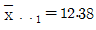
이라면, μ(C1)의 95% 신뢰구간은 약 얼마인가? (단, t0.975(12) =2.179이다.)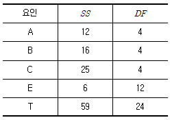
- 12.38±0.69
- 12.38±1.38
- 12.38±2.33
- 12.38±3.83
(정답률: 58%)
11. 1차 인자 A는 3수준, 2차 인자 B는 3수준, 블록반복 2회의 1차 단위가 1원 배치인 단일 분할실험을 행하고 분산분석표를 작성하기 위하여 다음의 데이터를 얻었다. 2차 오차변동 SE2 의 값은 얼마인가?
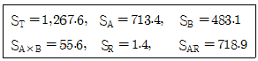
- 14.5
- 13.2
- 12.0
- 10.0
(정답률: 55%)
12. 직교 배열표 LN(PK)에 대한 설명으로 잘못된 것은?
- L：실험 로트를 나타내는 것
- P：수준 수
- N：행의 수(실험횟수)
- K：열의 수(인자 수)
(정답률: 65%)
13. 반복 없는 2원 배치의 분산분석표에서 ( ) 안에 들어갈 식은?
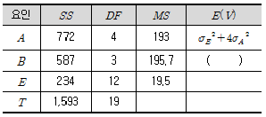
- σE2 + 2σB2
- σE2 + 3σB2
- σE2 + 4σB2
- σE2 + 5σB2
(정답률: 82%)
14. 다음에 설명하는 실험계획법은 어떤 계획법인가?
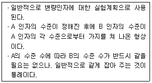
- 지분실험법
- 2원 배치법
- 교락법
- 완전 확률화 계획법
(정답률: 79%)
15. 모수인자 A, B의 수준수가 각각 l, m이고, 반복수가 r회인 2원 배치 실험에서 교호작용 A×B에 대한 평균제곱의 기댓값은?
- σA2 + σB2 +lmσA×B2
- σE2 + rσA×B2
- σE2 + lmσA×B2
- lσA2 + mσB2 + rσA×B2
(정답률: 69%)
16. 실험계획법에 의해 얻어진 데이터를 분산분석하여 통계적 해석을 할 때에는 측정치의 오차항에 대해 크게 4가지의 가정을 하는데, 이 가정에 속하지 않는 것은?
- 독립성
- 정규성
- 등분산성
- 교호성
(정답률: 77%)
17. 자동차의 제동장치의 성능에 대해 다구찌 기법에서 분류하고 있는 인자의 종류와 그 예시를 나타낸 것 중 옳지 않은 것은?
- 자동차의 브레이크 시스템은 제어인자에 해당되며 실험에서 중요한 인자로 취급된다.
- 자동차 브레이크 시스템에 대한 타이어의 상태는 잡음인자로 실험에서 중요하게 고려되어야 한다.
- 자동차 브레이크 시스템의 브레이크를 밟는 힘은 신호인자로 동특성이며 제품특성이 원하는 의도대로 출력이 되는지를 확인한다.
- 자동차 브레이크 시스템의 자동차 주위 온도는 상수인자이며 이들 인자는 표준을 잘 준수하는 것이 중요하다.
(정답률: 40%)
18. 벼 품종 A1, A2, A3의 단위당 수확량을 비교하기 위하여 2개의 블록으로 층별하여 난괴법 실험을 하였다. 각 품종별 단위당 수확량이 다음과 같을 때 블록별(B) 변동 SB는?
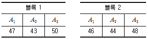
- 0.67
- 0.89
- 0.97
- 1.23
(정답률: 70%)
19. 반복이 있는 3원 배치법에서 A, B, C 인자의 수준수는 각각 3, 4, 5이고 반복수는 3이다. 오차항의 자유도는? (단, A, B, C는 모수인자이며 분산분석표에서 풀링되는 요인은 없다.)
- 180
- 120
- 48
- 24
(정답률: 67%)
20. Lg(34) 를 이용하여 아래와 같이 실험을 배치한다. 실험번호 3번의 실험조건은?
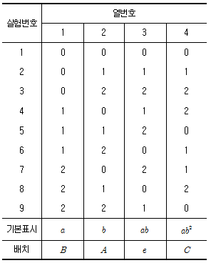
- A0B2C2
- A0B0C2
- A2B0C2
- A2B2C0
(정답률: 77%)
2과목: 통계적품질관리
21. OC 곡선에서 n, c를 일정하게 하고 N이 충분히 클 때 N을 변화시키면 OC 곡선의 변화로 가장 올바른 것은? (단, N은 로트의 크기, n은 시료 수, c는 합격판정 개수이다.)
- 무한대로 커진다.
- 거의 변하지 않는다.
- 경사가 급해진다.
- 일정하지 않다.
(정답률: 66%)
22. L제과회사는 10개의 대형 도매업소를 통하여 각 슈퍼마켓에 제품을 판매하고 있다. L사에서는 새로 개발한 과자의 선호도를 평가하기 위해서 각 도매업소가 공급하는 슈퍼마켓들 중에서 5개씩을 선택하여 시범판매하려고 한다. 이것은 어떤 표본 샘플링 방법인가?
- 단순 랜덤 샘플링
- 층별 샘플링
- 취락 샘플링
- 2단계 샘플링
(정답률: 43%)
23. 새로운 작업방법으로 시험제작한 화학약품의 성분함유량의 모평균이 기준으로 설정된 값과 같은지의 여부를 검정하고자 할 때 검정통계량의 올바른 식은? (단, 모 표준편차는 모른다고 가정한다.)
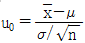
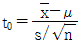
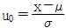
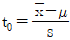
(정답률: 60%)
24. 적합도 검정에 대한 설명 중 올바른 것은?
- 계량형 자료에만 쓴다.
- 이론치 또는 기대치 nPi ≤ 5일 때 근사의 정도가 좋아진다.
- 검정통계량은 카이제곱분포를 따른다.
- 기대도수는 대립가설에 맞추어 구한다.
(정답률: 61%)
25. 관리계수(Cf)와 군간변동(σB)에 대한 설명 중 옳지 않은 것은?
- 관리계수 Cf ＜ 0.8이면 군구분이 나쁘다.
- 관리계수 0.5 ＜ Cf ＜ 1.2이면 대체로 관리상태에 있다고 볼 수 있다.
 관리도에서 관리한계를 벗어나는 점이 많아질수록 군간변동(σB)이 크게 된다.
관리도에서 관리한계를 벗어나는 점이 많아질수록 군간변동(σB)이 크게 된다.- 완전한 관리상태에서는 군간변동(σB)은 대략 1이 된다.
(정답률: 45%)
26. KS Q ISO 2859-1：2010 계수치 샘플링 검사 절차－제1부：로트별 합격품질한계(AQL) 지표형 샘플링 검사방안에서 1,000개의 물건 중 980개는 적합품이고 합격이다. 15개는 각각 1개씩 부적합을 가지고, 4개는 2개의 부적합을 가지며, 또 1개는 3개의 부적합을 가지고 있을 때 이 로트의 100 아이템당 부적합 수는?
- 1.6
- 2.6
- 3.6
- 4.6
(정답률: 58%)
27. 어떤 공장에서 생산하는 탁구공의 지름은 평균 1.30인치, 표준편차 0.04인치인 정규분포를 따르는 것으로 알려져 있다. 탁구공 4개의 평균이 1.28인치에서 1.30인치 사이일 확률은? (단, U~N(0, 1)일 때, P(0 ≤ U ≤ 0.5) = 0.1915, P(0 ≤ U ≤ 1.0) = 0.3413 이다.)
- 0.3413
- 0.1915
- 0.1498
- 0.5328
(정답률: 49%)
28. KS Q ISO 8423：2009 계량치 축차샘플링 검사방식(부적합률, 표준편차 기지)에서 하한규격이 주어진 경우, ncum ＜ nt 일 때 합격판정치(A)를 구하는 식으로 옳은 것은? (단, hA는 합격판정선의 절편, g는 합격판정선의 기울기, nt는 누계샘플 사이즈의 중지치, ncum은 누계 샘플 사이즈이다.)
- A = -hA + gㆍσㆍncum
- A = -hAㆍσ + gㆍσㆍncum
- A = hA + gㆍσㆍncum
- A = hAㆍσ + gㆍσㆍncum
(정답률: 53%)
29. 관리도의 특성에 대한 설명으로 옳지 않은 것은?
- 검출력은 공정이 변화했을 때 관리한계선 밖으로 벗어나는 확률이다.
- 3σ법 관리도에서는 제2종 과오가 극히 작아지도록 만들어졌다.
- 공정능력의 변화나 공정의 표준편차의 변화는 R관리도의 OC 곡선을 사용한다.
- 시료군의 크기(n)가 커지면 관리도 OC 곡선은 경사가 급해진다.
(정답률: 57%)
30. 상관관계가 유의하다고 하는 것은 모상관계수가 어떻게 되는 것을 의미하는가?
- 크다는 것을 뜻한다.
- 0이라고 인정할 수 없다는 것을 뜻한다.
- 작다는 것을 뜻한다.
- 0이라고 판단하라는 뜻이다.
(정답률: 63%)
31. 3개의 주사위를 던질 때 짝수의 눈이 나오는 개수(x)의 기대치 및 분산은?
- E(x)＝1.5, V(x)＝0.75
- E(x)＝1.5, V(x)＝1.5
- E(x)＝0.75, V(x)＝1.5
- E(x)＝0.75, V(x)＝0.75
(정답률: 53%)
32. 어떤 모집단의 평균이 기존에 알고 있는 모평균보다 큰지를 알아보려고 하는데 모 표준편차 값을 모르고 있다. 이 경우 어떤 검정을 하여야 하는가?
- 한쪽 t 검정
- 한쪽 x2 검정
- 양쪽 t 검정
- 양쪽 x2 검정
(정답률: 67%)
33.
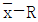
관리도에서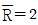
이고 R관리도의 관리상한선이 4.56이다. 이때 군의 크기 n은 얼마인가?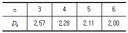
- 6
- 5
- 4
- 3
(정답률: 71%)
34. KS Q ISO 2859-1：2010 계수치 샘플링 검사 절차－제1부：로트별 합격품질한계(AQL) 지표형 샘플링 검사방안에서 합격판정 개수 Ac가 2개 이상의 검사가 진행되는 경우이면 몇 개의 로트가 연속 합격되어야 수월한 검사로 전환할 수 있는가?
- 연속 8로트
- 연속 10로트
- 연속 13로트
- 연속 15로트
(정답률: 62%)
35. 모 부적합수 차에 대한 신뢰구간을 구하기 위한
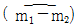
의 점추정치는? (단, x는 부적합 수, n은 시료 수, N은 로트의 크기이다.)- x1 - x2
- x1 + x2
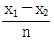
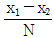
(정답률: 38%)
36. np 관리도에서 중심선 및 관리한계선의 결정에 대한 설명 중 옳지 않은 것은?
- 이항분포 이론에 따른 계산식에 의해 결정된다.
- 표본의 크기가 변할 경우 중심선이 변하므로 p 관리도를 사용한다.
- np 관리도에서 관리하한은 항상 적용하지 않는다.
- 표본의 크기가 커질수록 관리한계의 폭은 넓어진다.
(정답률: 56%)
37. KS Q ISO 2859：2009 계수치 샘플링 검사 절차－제1부：로트별 합격품질한계(AQL) 지표형 샘플링 검사 방안에서 엄격도 전환에 대한 설명으로 옳지 않은 것은?
- 검사의 엄격도는 보통검사, 수월한 검사, 까다로운 검사의 3종류가 있다.
- 보통검사에서 수월한 검사로 전환이 되는 전제조건으로 전환스코어(Switching Score)가 30점 이상이 되어야 한다.
- 검사하는 로트에서 불합격이 발생하면 전환스코어는 0점이 된다.
- 5회 샘플링 검사에서 1회에서 합격하면 3점이 가산되고, 그렇지 않으면 0점이 된다.
(정답률: 58%)
38. 계량 규준형 1회 샘플링 검사에서 모집단의 표준편차를 알고 특성치가 낮을수록 좋은 경우, 로트의 평균치를 보증하려고 한다. 다음 중 합격되는 경우는?
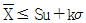
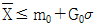
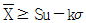
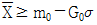
(정답률: 64%)
39. 검사단위의 품질표시방법으로 옳은 것은?
- 특성치에 의한 표시방법
- 샘플링 검사에 의한 표시방법
- 검사성적서에 의한 표시방법
- 엄격도검사에 의한 표시방법
(정답률: 60%)
40.
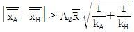
는 2개의 층 A, B간의 평균치의 차를 검정할 때 사용한다. 이 식의 전제조건으로 옳지 않은 것은? (단, k는 시료군의 수, n은 시료군의 크기이다.)- 두 개의 관리도는 관리상태에 있을 것
- kA = kB 일 것
 에 차이가 거의 없을 것
에 차이가 거의 없을 것- nA = nB 일 것
(정답률: 67%)
3과목: 생산시스템
41. ( ) 안에 알맞은 단어를 순서대로 나열한 것은?
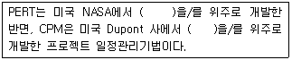
- Cost, Time
- Time, Cost
- Cost, Service
- Time, Service
(정답률: 78%)
42. M기업은 매년 30,000단위의 부품 A를 필요로 한다. 부품 A의 주문비용은 회당 25,000원, 단가는 5,000원, 연간 단위당 재고유지비가 단가의 2%라면 1회의 경제적 주문량은?
- 3,873단위
- 1,775단위
- 565단위
- 39단위
(정답률: 68%)
43. ABC 재고관리 시스템의 특징이 아닌 것은?
- 재고자산의 차별관리이다.
- 주요 품목을 중점관리한다.
- 파레토 분석을 실시한다.
- 전사적 자원관리를 실시한다.
(정답률: 56%)
44. 재고의 저장 공간을 두 개로 나누는 것으로 발주점의 수량만큼을 각각 두 개의 저장공간에 확보하는 재고 시스템은?
- One-bin 시스템
- Two-bin 시스템
- Hungarian 시스템
- MRP 시스템
(정답률: 84%)
45. 정성적 예측기법에 해당하지 않는 것은?
- 델파이법
- 중역의견법
- 전문가 의견조사
- 시계열분석법
(정답률: 60%)
46. PERT에서 활동 A의 추정시간이 다음과 같을 때 기대시간(E(t))과 분산(V)은?
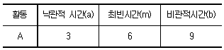
- E(t) = 4.0, V = 1.0
- E(t) = 6.0, V = 1.0
- E(t) = 6.0, V = 2.0
- E(t) = 4.0, V = 2.0
(정답률: 57%)
47. 기업경영에 있어서 구매 업무의 중요성은 날로 증가하고 있다. 구매의 효과를 측정하는 객관적 척도를 나타낸 것으로 가장 거리가 먼 것은?
- 예산 절감액
- 구매물품의 품질
- 납기 이행실적
- 거래업체의 수
(정답률: 71%)
48. 일반적으로 일정계획의 효과를 측정하는 평가기준에 해당하지 않는 것은?
- 평균 처리시간
- 기계설비 이용률
- 재고회전율
- 주문의 평균 대기시간
(정답률: 39%)
49. 총괄생산계획(Aggregate Planning) 기법 중 탐색결정규칙(Search Decision Rule)에 대한 설명으로 옳지 않은 것은?
- Taubert에 의해 개발된 휴리스틱 기법이다.
- 하나의 가능해를 구한 후 패턴탐색법을 이용하여 해를 개선해 나간다.
- 총 비용함수의 값을 더 이상 감소시킬 수 없을 때 탐색을 중단한다.
- 과거의 의사결정들을 다중회귀분석하여 의사결정규칙을 추정한다.
(정답률: 56%)
50. 자재관리의 기본활동으로 가장 관계가 먼 것은?
- 자재와 부품을 구매하는 데는 생산계획에 따라 세부적인 계획이 이루어져야 한다.
- 구매계획 수립에는 MRP 시스템을 활용할 수 있다.
- 수립된 생산계획과 구매계획은 변경할 수 없다.
- 생산에 필요한 소요량 산정, 구매, 보관의 활동을 합리적으로 수행하는 것이다.
(정답률: 82%)
51. JIT 생산시스템에서 어떤 부품이 언제, 얼마나 필요한가를 알려주는 역할을 하는 것은?
- MPS
- BOM
- 경광등
- Kanban
(정답률: 52%)
52. 작업활동의 시간과 비용이 다음과 같을 때 비용구배는 얼마인가?
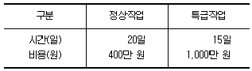
- 120만 원
- 250만 원
- 400만 원
- 600만 원
(정답률: 71%)
53. 제품 A를 생산하기 위한, 한 로트당 정상시간은 400분이다. 외경법에 의한 여유율이 20%일 때 제품 A를 300로트 생산하는 데 필요한 작업시간은?
- 2,200시간
- 2,400시간
- 4,067시간
- 4,200시간
(정답률: 78%)
54. 5S 활동 중에서 필요한 것을 필요할 때 사용할 수 있는 상태로 하는 것은?
- 정리
- 정돈
- 청소
- 청결
(정답률: 75%)
55. 설비 예방보전(Preventive Maintenance)에 관한 설명으로 옳지 않은 것은?
- 정기점검 주기 결정
- 예비부품의 적정 재고 확보
- 제품의 불량 감소 및 품질 균일화 목적
- 고장난 설비의 수리
(정답률: 67%)
56. 학습곡선(공수체감곡선)의 활용 분야에 해당하지 않는 것은?
- 제품이나 부품의 적정 구입가격 결정
- 작업자 안전
- 작업로트 크기에 따라 표준공수 조정
- 성과급 결정
(정답률: 47%)
57. 미세동작분석(Micro Motion Study)의 장점에 해당하지 않는 것은?
- 복잡한 작업, 빠른 작업, 빠르면서 세밀한 작업의 기록도 용이하게 행할 수 있다.
- 재현성이 좋다.
- 사이클 타임이 짧은 작업에 이용된다.
- 워크샘플링 방법을 실시할 수 있다.
(정답률: 64%)
58. 오늘 날짜는 10일이고, 제품별 생산일정은 아래 표와 같다. 긴급률 기법을 활용하여 생산순서를 결정했을 때 가장 먼저 작업하게 되는 제품은?
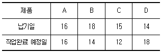
- A
- B
- C
- D
(정답률: 63%)
59. 표준시간을 산정하는 기법이 아닌 것은?
- MAPI법
- 표준자료법
- WF법
- WS법
(정답률: 53%)
60. MRP 체계에 해당되는 특징은?
- 독립수요
- 재발주점을 이용한 발주
- 종속품목수요
- 자재흐름은 끌어당기기 시스템
(정답률: 60%)
4과목: 신뢰성관리
61. 다음 FT(Fault Tree)도에서 시스템의 고장확률은 얼마인가? (단, 각 구성품의 고장은 서로 독립이며, 주어진 수치는 각 구성품의 고장확률이다.)
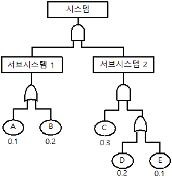
- 0.02352
- 0.02552
- 0.32772
- 0.35572
(정답률: 69%)
62. 시간의 경과에 따라 시스템이나 제품의 기능이 저하되는 고장은?
- 초기고장
- 우발고장
- 열화고장
- 파국고장
(정답률: 68%)
63. 어떤 기계의 고장은 1,000시간당 2.5%의 비율로 일정하게 발생한다. 이 기계의 MTBF는 몇 시간인가?
- 40시간
- 400시간
- 4,000시간
- 40,000시간
(정답률: 50%)
64. 고장률이 λ = 0.02/시간으로 일정한 두 부품을 병렬로 결합한 시스템의 평균수명은?
- 50시간
- 75시간
- 100시간
- 200시간
(정답률: 65%)
65. 다음 중 파괴시험에 해당되지 않는 것은?
- 정상수명시험
- 가속수명시험
- 강제열화시험
- 동작시험
(정답률: 65%)
66. 수명자료가 정규분포인 경우의 고장률 함수 λ(t)의 형태는?
- 일정함수
- 상수함수
- 감소함수
- 증가함수
(정답률: 50%)
67. 평균수명이 3,000시간인 발전기 2대가 대기결합 모형으로 구성되어 있으며 전환스위치의 신뢰도는 100%이다. 이 발전기 시스템의 평균수명은 몇 시간인가? (단, 발전기의 수명분포는 지수분포를 따른다고 가정한다.)
- 1,500시간
- 3,000시간
- 4,500시간
- 6,000시간
(정답률: 42%)
68. 특정 부품에 대하여 등간격으로 증가하는 스트레스 수준을 순차적으로 적용하는 시험은?
- 가속시험(Accelerated Test)
- 내구성시험(Endurance Test)
- 단계 스트레스 시험(Step Stress Test)
- 스크리닝 시험(Screening Test)
(정답률: 68%)
69. 수명분포가 와이블 분포인 확률밀도함수
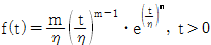
인 n개의 수명시험 데이터를 얻었다. 이 데이터로부터 η와 m에 대한 최우추정치를 구할 때 옳은 것은?- η와 m에 대한 최우추정치는 존재하지 않는다.
- η에 대한 최우추정치는 존재하나 m의 최우추정치는 존재하지 않는다.
- 둘의 최우추정치 모두 존재하나 수치해석적 방법으로 풀어야 한다.
- η에 대한 최우추정치는 존재하지 않고 m의 최우추정치만 존재한다.
(정답률: 51%)
70. 수명분포가 지수분포인 부품 n개의 고장시간이 각각 x1, …, xn일 때, 고장률 λ에 대한 추정치 는?
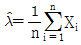
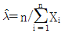
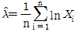
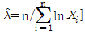
(정답률: 66%)
71. 수명분포가 지수분포인 부품 n개를 t0시간에서 정시중단시험을 하였다. t0시간 동안 고장 수는 r개이고 고장품을 교체하지 않는 경우 각각의 고장시간이 t1, …, tr 이라면, 고장률 λ에 대한 추정치는?
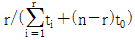
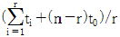
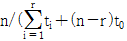
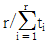
(정답률: 70%)
72. 고장시간과 수리시간이 각각 지수분포를 따르는 시스템의 가용도(Availability)는? (단, 이 시스템의 고장률은 λ, 수리율은 μ이다.)
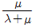
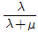
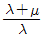
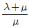
(정답률: 69%)
73. 3개의 부품 B1, B2, B3로 이루어진 직렬구조의 시스템이 있다. 서브시스템 B1, B2, B3의 고장률이 각각 0.002, 0.0⑤, 0.004(회/시간)로 알려져 있을 때, 20시간에서 시스템의 신뢰도를 0.9 이상이 되도록 하려면 서브시스템 B1에 배분되어야 할 고장률은 약 얼마인가?
- 0.00096/시간
- 0.00176/시간
- 0.0⑤27/시간
- 0.18182/시간
(정답률: 32%)
74. 각 부품의 신뢰도가 동일한 10개의 부품으로 조립된 제품이 있다. 제품의 설계목표 신뢰도를 0.99로 하기 위한 각 부품의 신뢰도는 약 얼마인가? (단, 각 부품은 직렬결합으로 구성된다.)
- 0.9989955
- 0.9998995
- 0.9999895
- 0.9999995
(정답률: 72%)
75. 일반적인 FMEA 분해레벨의 배열 순서로 옳은 것은?
- 시스템 → 서브시스템 → 컴포넌트 → 부품
- 서브시스템 → 시스템 → 컴포넌트 → 부품
- 시스템 → 서브시스템 → 부품 → 컴포넌트
- 시스템 → 컴포넌트 → 부품 → 서브시스템
(정답률: 56%)
76. 신뢰도와 불신뢰도의 관계에 대한 설명 중 옳은 것은?
- 신뢰도는 불신뢰도를 t 시점에서 미분하여 1에서 뺀 값이다.
- 신뢰도가 증가하면 불신뢰도는 증가하여 양(Positive)의 상관관계를 갖는다.
- 신뢰도는 일정 t 시점에서의 잔존 확률이고, 불신뢰도는 일정 t 시점에서의 누적고장확률이다.
- 신뢰도와 불신뢰도의 관계는 소시료 신뢰성 실험의 경우 관계 규정이 불가능하다.
(정답률: 71%)
77. 고유신뢰성에 대한 설명으로 옳은 것은?
- 설계 변경에 의해 개선할 수 있는 신뢰성이다.
- 양산단계 전에는 제품의 고유신뢰도를 증대시킬 수 없다.
- 예방보전에 의해 제고할 수 있는 신뢰성이다.
- 사용방법을 숙지시킴으로써 제고할 수 있는 신뢰성이다.
(정답률: 56%)
78. 다음 표는 샘플 200개에 대한 수명시험 데이터이다. 구간(500, 1,000)에서의 경험적(Empirical) 고장률(λ(t))은 얼마인가?
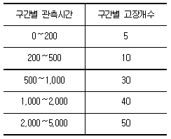
- 1.50 × 10-4/h
- 1.62 × 10-4/h
- 3.24 × 10-4/h
- 4.44 × 10-4/h
(정답률: 47%)
79. 고장률이 0.2로 일정한 시스템에 대한 t = 2 시점에서의 신뢰도는?
- e-0.6
- e-0.5
- e-0.4
- e-0.3
(정답률: 70%)
80. 두 개의 부품 A와 B로 구성된 대기 시스템이 있다. 두 부품의 고장률이 각각 λA = 0.02, λB = 0.03일 때, 50시간까지 시스템이 작동할 확률은 약 얼마인가? (단, 스위치의 작동확률은 1.00 으로 가정한다.)
- 0.264
- 0.343
- 0.657
- 0.736
(정답률: 42%)
5과목: 품질경영
81. 기업의 목적ㆍ경영이념ㆍ경영정책ㆍ중장기 경영계획 등을 토대로 해서 수립된 연도 경영방침(사장 방침)을 달성하기 위해서 계층별로 방침을 전개ㆍ책정 즉 실행계획을 세워서 이를 실시한 다음 그 결과를 검토하여 필요한 조처를 취하는 조직적인 관리활동은?
- 품질관리
- 방침관리
- 목표관리
- 수율관리
(정답률: 49%)
82. 어떤 품질 특성값의 규격이 16.5 이하로 되어 있고, 평균값 이 14.25, 표준편차가 1.04일 때, 공정능력지수(CPU)는 약 얼마인가?
- 0.361
- 0.721
- 0.542
- 0.817
(정답률: 62%)
83. 구멍의 치수가 축의 치수보다 작을 때처럼 항상 죔새가 생기는 끼워맞춤 형태는?
- 헐거운 끼워맞춤
- 중간 끼워맞춤
- 억지 끼워맞춤
- 틈새 끼워맞춤
(정답률: 75%)
84. 품질개념에서 품질수준을 결정하는 요인이 아닌 것은?
- 고객만족도
- 판매량
- 성능, 외관, 신뢰성
- 내구성 및 서비스 용이성
(정답률: 83%)
85. 파이겐바움(A. V. Feigenbaum)이 제시한 품질에 영향을 주는 요소인 9M에 해당되지 않은 것은?
- Markets
- Motivation
- Men
- Motion
(정답률: 66%)
86. QC 공정표에 대한 설명으로 옳지 않은 것은?
- 공정관리의 준비단계나 공정관리를 실시해 나가는 데 있어서 공정관리 표준의 하나로 이용된다.
- 제조공정 순으로 제조부문 및 검사부문이 어떤 품질특성을 어떻게 관리하여 최종 제품의 품질을 어떻게 결정하는지에 관한 약속이다.
- 관리공정표라고도 한다.
- QC 공정표에는 선정된 검사항목만을 표시한다.
(정답률: 61%)
87. KS A ISO 3：2012 표준수－표준수 수열에서 표준수에 관한 설명으로 옳지 않은 것은?
- R 5 보다 R 20의 증가율이 더 크다.
- R 5, R 10, R 20, R 40을 기본수열이라고 한다.
- 설계 등에 있어서 단계적으로 수치를 결정할 경우에는 표준수를 사용한다.
- R 80을 특별 수열이라고 한다.
(정답률: 61%)
88. KS Q ISO 9001：2009 품질경영관리 시스템-요구사항의 특징이 아닌 것은?
- 제조프로세스에서 경영프로세스로 확대하였다.
- 품질경영 시스템적 요소이다.
- 제조중심의 검사, 시험, 감시이다.
- 제조업보다는 범산업적으로 사용된다.
(정답률: 64%)
89. 품질비용의 분류로서 평가비용 항목에 해당되지 않는 것은?
- 수입검사 비용
- 부적합품 처리 비용
- 공정검사 비용
- 계측기 검교정 비용
(정답률: 62%)
90. 제품이나 서비스의 시방 및 설계를 담당하는 연구개발 부서에서 담당해야 할 업무가 아닌 것은?
- 제품 및 서비스에 대한 설계 기준 설정
- 품질업무와 관리사항을 명확히 수립하여 부서의 업무분장을 실시
- 품질정보를 수집하고 해석하여 제품 및 서비스의 설계품질을 연구
- 제품 및 서비스의 시제품 개발
(정답률: 63%)
91. 기업의 PL법에 대한 대책 중 결함 있는 제품을 만들지 않기 위한 대책인 PLP(Product Liability Prevention)로 옳은 것은?
- 제품 사용설명서에 책임을 명확하게 명시한다.
- 신뢰성을 검증하기 위하여 충분한 안전시험을 실시한다.
- 문제가 발생되었을 때, 초기에 해결할 수 있도록 직원들을 훈련한다.
- 만약에 대비하여 PL 보험에 가입한다.
(정답률: 59%)
92. 회사의 경영철학을 바탕으로 경영목표를 설정하고 품질방침을 결정하는 주체는?
- 품질관리실무자
- 품질관리부서
- 판매부서
- 최고경영자
(정답률: 78%)
93. 공정능력에 관한 설명 중 옳지 않은 것은?
- 정적 공정능력은 문제의 대상물이 갖는 잠재능력이다.
- 동적 공정능력은 현실적인 면에서 실현되는 능력이다.
- 단기공정능력은 임의의 일정 시점에 있어서 공정의 정상적인 상태이다.
- 장기공정능력은 정상적인 공구마모에 의한 변동을 배제한다.
(정답률: 68%)
94. 길이의 규격이 각각 6m±10cm, 3m±10cm, 5m±10cm인 3개의 봉을 연결시켰을 때 연결된 봉의 허용차는 약 얼마인가? (단, 봉의 길이는 정규분포를 따르고, 연결할 때 로스는 없다고 가정한다.)
- ±5.5cm
- ±17.3cm
- ±30.0cm
- ±34.6cm
(정답률: 66%)
95. 어떤 문제에 대한 특성과 그 요인을 파악하기 위한 것으로 브레인스토밍이 많이 사용되는 개선활동 기법은?
- 특성요인도(Cause & Effect Diagram)
- 산점도(Scatter Diagram)
- 체크시트(Check Sheet)
- 층별(Stratification)
(정답률: 71%)
96. 좋은 측정 시스템이 갖춰야 할 특성에 관한 설명으로 옳지 않은 것은?
- 측정 시스템은 통계적으로 안정된 관리상태에 있어야 한다.
- 측정 시스템에서 파생된 산포는 제조공정에서 발생한 산포에 비해서 충분히 작아야 한다.
- 측정 시스템에서 파생된 산포는 규격공차에 비해서 충분히 작아야 한다.
- 규격이 2.⑤~2.08인 경우 적절한 계측기 눈금은 0.01까지 읽을 수 있어야 한다.
(정답률: 64%)
97. 표준화는 적용기간에 따라 통상표준, 시한표준, 잠정표준으로 분류되는데 다음 중 시한표준(時限標準)을 이용하는 경우가 아닌 것은?
- 특정 활동의 추진을 목적으로 할 때
- 과도적인 상태에서의 취급을 할 때
- 일정 시기가 지나면 의미가 없어지는 경우
- 규정하려고 하는 내용에 대한 실험·연구 등이 아직 끝나지 않았을 경우
(정답률: 44%)
98. 개선활동에 있어서 부적합 항목 등에 대해 도수 또는 손실금액을 막대그래프와 꺾은선그래프를 사용하여 나타내는 것으로 중점관리를 목적으로 활용하는 도구는?
- 체크시트
- 특성요인도
- 파레토도
- 히스토그램
(정답률: 60%)
99. 사내표준 작성의 필요성이 큰 경우에 해당되지 않는 것은?
- 공정이 변하는 경우
- 신기술 도입 초기 단계인 경우
- 산포가 큰 경우
- 중요한 개선이 이루어진 경우
(정답률: 68%)
100. 반드시 해야 할 바를 규정하고 규정대로 이행하는 체제로서 제3자에게 실증해 보여 줄 수 있어야 하는 것은?
- 품질기능
- 품질 시스템
- 품질전개
- 품질 기능전개
(정답률: 36%)
먼저, A인자의 평균치 차이가 유의하다는 것은 적어도 두 수준의 평균치가 다르다는 것을 의미한다. 따라서 μ(A3)와 μ(A1)의 평균치 차이가 유의하다는 것은 A3와 A1의 평균치가 다르다는 것을 의미한다.
μ(A3)와 μ(A1)의 평균치 차이를 구간추정할 때, 두 모집단의 분산이 같다고 가정할 수 없으므로, 두 모집단의 분산이 다르다는 것을 가정하고 구간추정을 수행해야 한다. 이 경우, 각 모집단의 분산을 구하기 위해 SA 값을 사용한다.
μ(A3)와 μ(A1)의 평균치 차이를 구하기 위한 신뢰구간은 다음과 같다.
( x̄3 - x̄1 ) ± tα/2 * Spooled * sqrt( 1/n3 + 1/n1 )
여기서, Spooled = sqrt( (n3-1)SA + (n1-1)SA ) / (n3 + n1 - 2) = sqrt( 2*SA / 8 ) = sqrt( SA / 4 ) = 0.411
따라서, ( x̄3 - x̄1 ) ± tα/2 * Spooled * sqrt( 1/n3 + 1/n1 ) = ( 0.8 - 0.43 ) ± 2.921 * 0.411 * sqrt( 1/5 + 1/5 ) = 0.37 ± 0.41
따라서, 0.37 - 0.41 ≤ μ(A3) - μ(A1) ≤ 0.37 + 0.41 이므로, 0.370 ≤ μ(A3) - μ(A1) ≤ 1.190 이다.
정답은 "0.370 ≤ μ(A3) - μ(A1) ≤ 1.190" 이다.